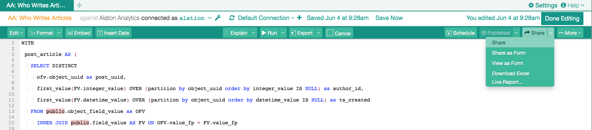

Sharing Queries in Compose¶
Alation Cloud Service Applies to Alation Cloud Service instances of Alation
Customer Managed Applies to customer-managed instances of Alation
Applies to releases V R6 (5.10.x) to 2022.4
Note
This page is about sharing and accessing queries in version 2022.4 and earlier. In version 2023.1, we introduced a feature for granular query permissions that substantially changes sharing and access for queries. See Share and Access Queries - 2023.1 and Later for details.
You can share a query with users to make them aware that the query exists in the catalog or you can share and invite them to collaborate at the same time. Sharing means sending the link to the query using email: the other user will receive an email and will be able to access the query following the included link.
To share,
Open your query in Compose.
On the toolbar, on the right, click Share to open the sharing dialog:
In the Share with a Colleague field, add users to share the query with:
To the right of the field, select access permissions: Viewer or Author. This permission will be assigned to all the users you have selected in the Share with a Colleague field. The author permission will add the user as a collaborator to this query and allow them to edit the query statement, grant access to other users, and perform other actions on the query:
Optionally, add a note to the Note field if you want to add a message to the email.
To simultaneously share the results of this query with the selected users, select the checkbox Grant access for the above users to all of your results for this query.
If you need the link to the query you are sharing, you can copy it to your clipboard. To copy the link, click Copy Link under Copy Share Link.
If necessary, from the Share dialog, you can see who currently has access to this query. To view current authors and viewers, click the Who Can Access? link on the top right. This will bring up the Access dialog: Granting Access to Queries in Compose. If you are an Author of the query you are sharing, you can add or remove collaborators, too.
To finish sharing, click Send on the bottom right. The users you have included in the sharing list will receive email notifications with a link to the query.
{kind=link}
{kind=link}